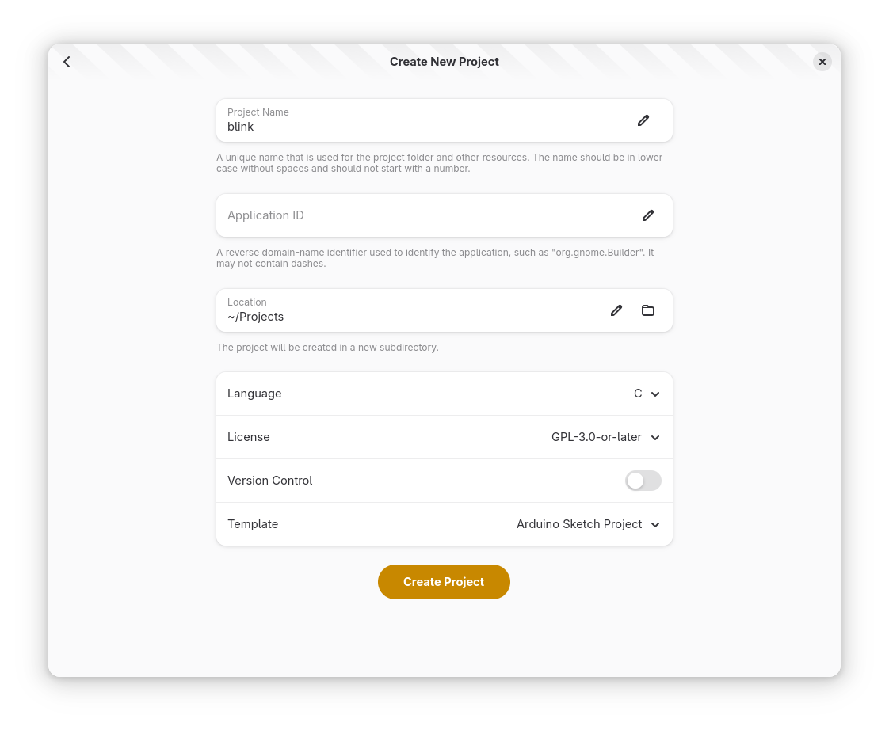
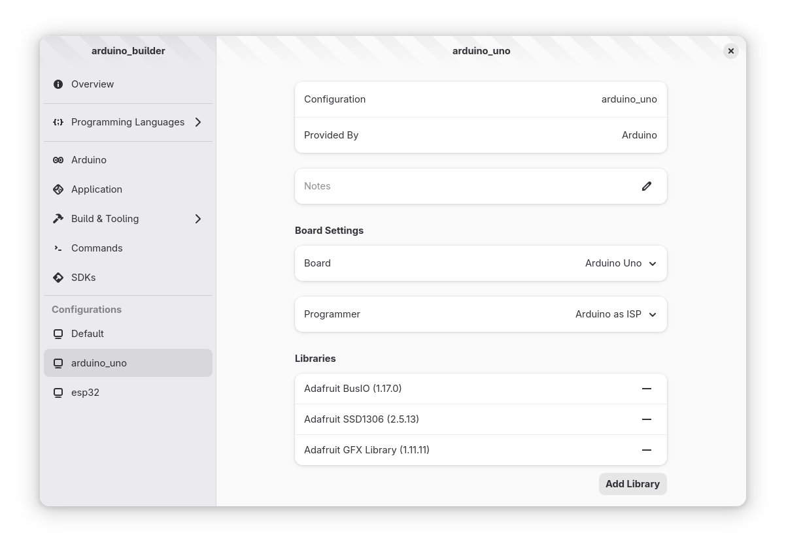
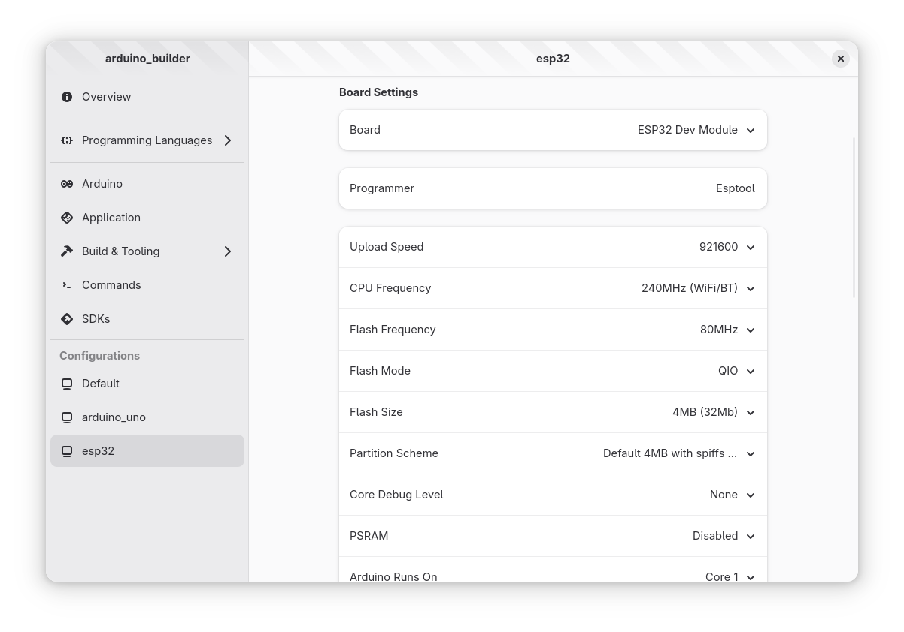
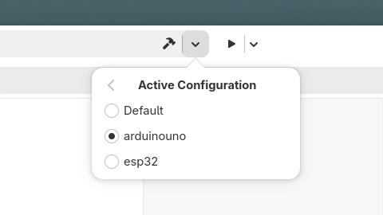
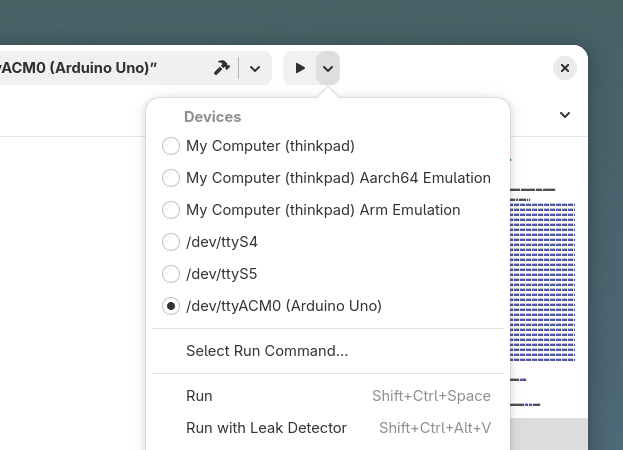
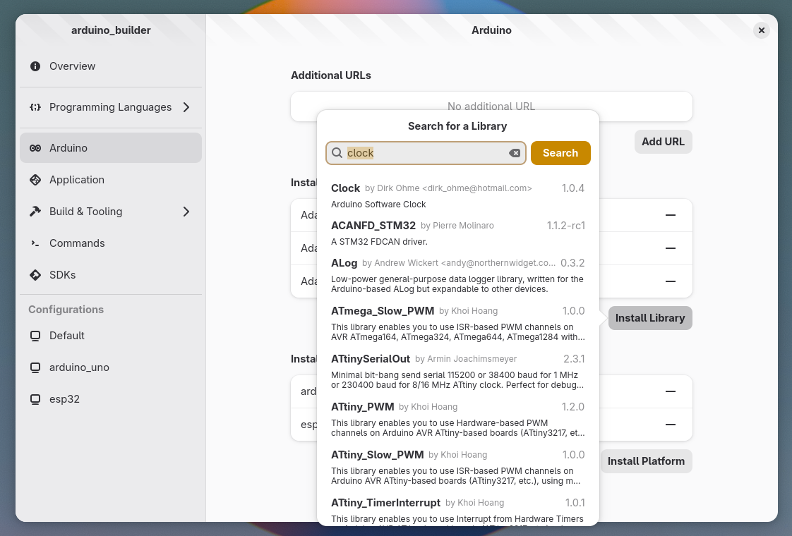

Arduino
The Arduino plugin for GNOME Builder provides seamless integration with arduino-cli. This plugin allows you to develop, compile, and upload Arduino sketches directly from Builder’s interface.
Prerequisites
Before using the Arduino plugin, ensure you have arduino-cli installed on your system. Without this, the plugin will not function.
To install arduino-cli checkout the installation page.
Working with Arduino Projects
New Project
To easily start a new project you can use Builder’s template for Arduino. An Arduino project is just a folder with a sketch.yaml (or sketch.yml) and a *.ino file with the same name as the folder.
The Application ID entry can be left empty.
{kind=link}

Note
If you want to use Builder with an existing project make sure it has the same file structure.
Arduino Profiles
Profiles in arduino-cli are defined in a sketch.yaml file. Builder lets you configure and manage these profiles.
When you need to use a library in a project you will need to add it to the profile, same goes for platforms.
You can edit most profile preferences through Builder’s UI:
{kind=link}

{kind=link}

Compiling Sketches
To compile an Arduino sketch:
Ensure you have selected the desired profile from the active configuration menu
Click the Build Project button in the OmniBar
{kind=link}

Uploading Sketches
To upload your compiled sketch to an Arduino compatible board:
Select the target device from the devices menu
Click the Run Project button in the header bar
Note
Selecting a device that is not compatible with Arduino will have no effect.
{kind=link}

Managing Arduino Components
Installing Libraries and Platforms
The plugin allows you to easily manage Arduino libraries and platforms:
Open the Preferences dialog
Navigate to the Arduino page
Use the search functionality to find platforms or libraries
Double click on the desired platform or library
All platforms and libraries installed through Builder are shared between arduino-cli and Arduino IDE 2.
{kind=link}

Adding Additional Sources
For platforms not available in the standard Arduino index:
Go to the Arduino preferences page
Add the platform URL in the Additional URLs field
The new platforms will now appear in search results
Advanced Usage
You can compile sketches using platforms or libraries not permanently installed on your system. The arduino-cli tool will download them temporarily. However, these components won’t appear in the profile UI since only installed platforms and libraries are shown.
For some more advanced features not yet implemented in the Arduino plugin for GNOME Builder checkout arduino-cli’s documentation.
Troubleshooting
If you have any issue uploading sketches you might need to fix port access on Linux following this article.